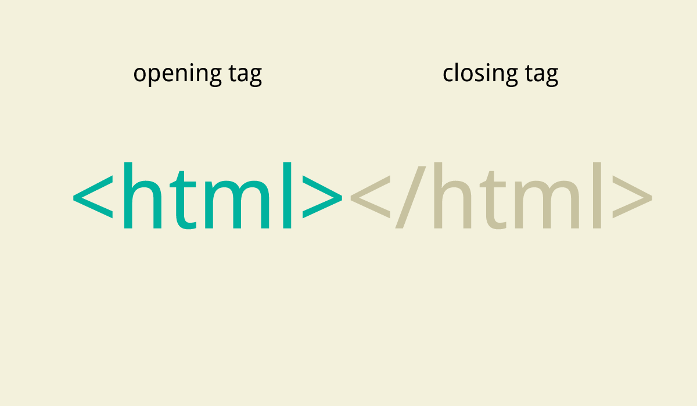

El lenguaje de marcas de hipertexto, HTML o (HyperText Markup Language) se basa en el metalenguaje SGML (Standard Generalized Markup Language) y es el formato de los documentos de la World Wide Web. El World Wide Web Consortium (W3C) es la organización que desarrolla los estándares para normalizar el desarrollo y la expansión de la Web y la que publica las especificaciones relativas al lenguaje HTML
HTML fue concebido como un lenguaje para el intercambio de documentos científicos y técnicos adaptado para su uso por no especialistas en tratamiento de documentos. HTML resolvió el problema de la complejidad de SGML sirviéndose de un reducido conjunto de etiquetas estructurales y semánticas apropiadas para la realización de documentos relativamente simples. Pero, además de simplificar la estructura de los documentos, HTMLhtml soportaba el hipertexto.

En un corto período de tiempo, HTML se hizo muy popular y rápidamente superó los propósitos para los que había sido creado. Desde sus albores, ha habido una constante invención de nuevos elementos para usarse dentro de HTML como estándar y para adaptar HTML a las nuevas posibilidades de la Web, como la posibilidad de usar elementos multimedia o la utilización de elementos dinámicos (animaciones Java, uso de Flash, controles ActiveX, etc. que hacen las páginas web mucho más llamativas e interactivas para el usuario. Sin embargo, esta ampliación de nuevos elementos también ha traído problemas de compatibilidad de los documentos entre las distintas plataformas y programas.
El lenguaje HTML nace en 1991 de manos de Tim Bernes-Lee del CERN como un sistema hipertexto con el único objetivo de servir como medio de transmisión de información entre los científicos que se ocupaban de la Física de alta energía ,como parte de la iniciativa World Wide Web. Así pues, HTML tuvo lugar a la par que el origen de la Web, ya que se trata del lenguaje que sirve para crear páginas web. En 1993 Dan Conne lly escribe la primera DTD (Document Type Definition) de SGML describiendo el lenguaje y, desde entonces, el lenguaje HTML ha estado sometido a incesantes cambios. De hecho, han existido distintas versiones: 1.0 (en 1993), 2.0 (en 1995), 3.0 (en 1995), 3.2 (en 1997), 4.0 (en 1997, revisada en 1998).
Un documento HTML comienza con la etiqueta html>, y termina con /html>. Dentro del documento hay dos zonas principales: el encabezamiento, delimitado por las marcas
y , que sirve para definir algunos valores válidos para todo el documento, y el cuerpo, delimitado por las etiquetas y , donde reside la información del documento. El elemento TITLE> contenido dentro del encabezamiento permite especificar el título de un documento HTML. Este título no forma parte del documento en sí pues no se ve en la pantalla principal, sino que sirve como título de la ventana del programa que la muestra. Existen muchos otros elementos que se engloban dentro del encabezamiento pero para la estructura básica del lenguaje HTML en su nivel básico no son necesarios. El cuerpo de un documento HTML contiene el texto, imágenes, etc. que, con la presentación y los efectos que se decidan, se presentarán ante el usuario . Dentro del cuerpo se pueden aplicar una serie de efectos a través de diferentes marcas o etiquetas (también otros autores las denominan "directivas"). Así pues, la estructura de un documento HTML es la siguiente:
El texto puede tener unas cabeceras, comprendidas entre las etiquetas H1> y /H1>, H2> y /H2>, etc. (hasta el número 6), siendo el número indicativo del tamaño. El tamaño mayor es el correspondiente al número 1. Hay otras etiquetas como P>, para separar los distintos párrafos, la etiqueta de centrado CENTER> y /CENTER> que sirve para centrar todo lo que esté dentro de ella, ya sea texto, imágenes, etc. la etiqueta HR> para obtener una raya horizontal tan ancha como la pantalla, y con la apariencia de estar embutida sobre el fondo, etc.

La mayoria de las etiquetas se abren y se cierran.
